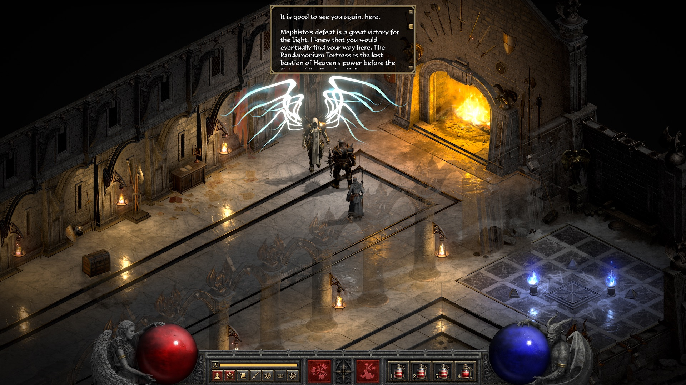

Par la suite je me suis intéressé à la mécanique et aux voitures de manière générale
Et plus précisément aux youngtimers notamment la
BMW 325 IX E30

Je suis tombé dedans étant petit(un peu comme Obélix) grace à mon père avec la première Playstation
Puis j'ai enchainé avec toutes les consoles après (Nintendo et Sony pas Xboite)
Et puis j'ai découvert mon genre préféré grace à mon meilleur pote
LES HACK'N SLASH
Avec Diablo II

et par la suite Grim Dawn, The Slormancer et quelques jeux à droite à gauche